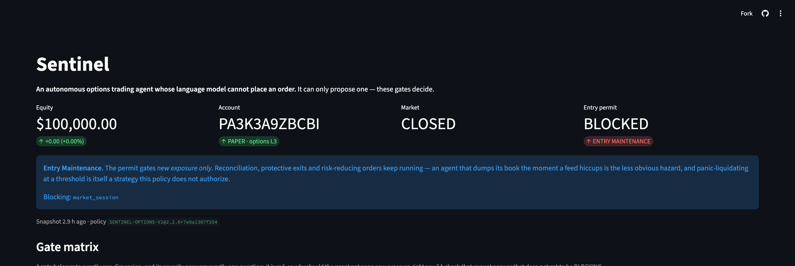
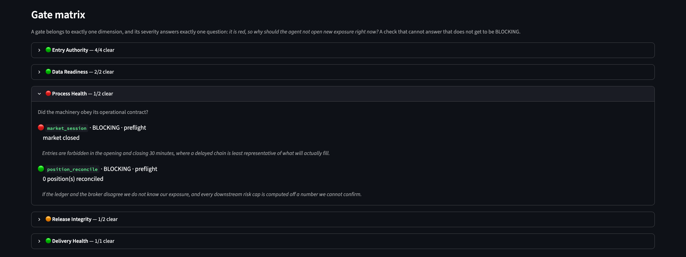
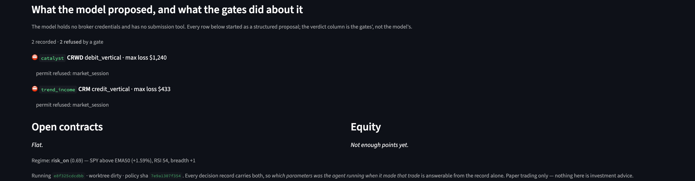
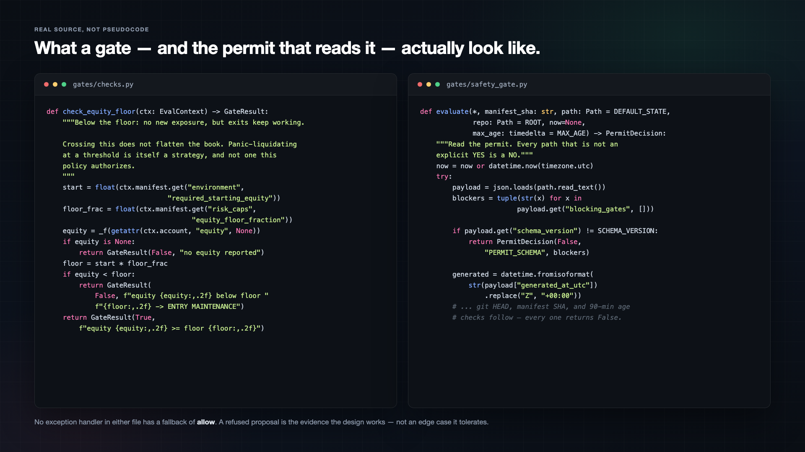

Sentinel. The model proposes.
The gates decide.
This is an autonomous options trading agent
for the Alpaca A-I Trading Agents Hackathon,
built on one design claim:
the language model cannot place an order.
It can only propose one.
The model proposes. The gates decide.
Alpaca AI Trading Agents Hackathon · lablab.ai × Alpaca · Aug 28 – Sep 4
The failure mode of an L-L-M trader
isn't being wrong --
it's being confidently wrong.
Most agents this week give the model
a broker tool and let it call
it directly. Sentinel splits that apart:
the model emits a proposal,
with no broker credentials and no submission
tool. Sixteen deterministic gates decide whether
it becomes an order.
The failure mode
Confidently wrong is worse than wrong.
Most agents this week hand the model a broker tool and let it call it. Sentinel never gives it one.
TYPICAL AGENT
direct tool call — the model can place the order itself
SENTINEL
a structured proposal — no broker credentials, no submission tool
Four pieces of code,
four jobs. The proposer reads ranked candidates
and writes the thesis --
a brain, never a finger.
The gates check sixteen conditions;
an unregistered gate defaults to blocking,
never a softer answer.
The safety gate is bound to the
exact code commit and policy version,
and expires in ninety minutes.
The executor accepts a proposal only if
its order shape is declared --
no shape declares a market order,
so one is structurally impossible to submit.
Architecture
Four pieces of code. Four jobs.
agent/proposer.py
Proposer
Reads ranked candidates, writes the thesis. A brain, never a finger.
gates/registry.py
16 Gates
5 dimensions. Unregistered defaults to BLOCKING, never a softer answer.
gates/safety_gate.py
Safety Gate
Bound to the exact commit + policy hash. Expires in 90 minutes.
agent/executor.py
Executor
Accepts only a declared order shape. No shape declares a market order.
The trading logic is a quant engine
first: regime classification,
a per-name score,
and a gap detector.
Four vectors consume that signal.
Trend trades short-dated credit spreads in the
regime's direction --
measured at eighty-seven percent wins over two
hundred and fifty simulated sessions --
plus one conviction single-leg when conviction
is highest. Catalyst is the confirmed earnings
event: the Lululemon straddle,
sized from a move study.
Its post-earnings drift leg was measured negative
over three years of data,
so it is off.
Event is the August jobs report:
a strangle the night before,
plus a zero-DTE gap continuation measured at
nine wins in ten.
And Vol sells iron condors when the
tape is range-bound.
The language model ranks the candidates these
engines produce and writes the reasoning --
it never invents a trade from nothing.
AI logic
A quant engine first. The model ranks — never invents.
Trend
short-dated credit spreads in the regime's direction
87% wins · 250 simulated sessions
+ 1 conviction single-leg
Catalyst
the one confirmed earnings event in the window
LULU straddle · sized from a move study
PEAD drift leg
Event
the August jobs report — strangle the night before
0-DTE gap continuation · 9 wins in 10
Vol
iron condors, only when the tape is range-bound
The language model ranks what these engines produce and writes the
reasoning. It never invents a trade from nothing.
Every position is defined-risk.
No naked shorts,
no market orders.
Twelve thousand dollars is the hard cap
on any single trade --
tournament-calibrated from the event studies,
and always a fraction of starting equity,
never of current.
Forty thousand across the whole book at
once, enforced at submission,
not just declared.
A daily kill switch at negative twelve
thousand halts new entries for the rest
of the day.
And below seventy thousand,
the agent enters what we call Entry
Maintenance: no new exposure,
but exits and reconciliation keep running normally.
Risk gates
Every position is defined-risk. No exceptions.
$12,000
max on any single trade — a fraction of starting equity, not current
$40,000
max across the whole book — enforced at submission, not just declared
-$12,000
daily kill switch — halts new entries for the rest of the day
<$70,000
Entry Maintenance — no new exposure, exits keep running
On the Alpaca side:
the Trading API for limit-only,
multi-leg execution. Market data blends real-time
I-E-X stock prices with the free option
feed, delayed fifteen minutes --
so every strike is picked by that
snapshot's delta, then priced fresh with Black-Scholes.
The delayed feed picks the contract;
it never sets the price.
Both the M-C-P server and the Alpaca
C-L-I are wired in.
Alpaca infrastructure
Real plumbing, not a demo shim.
⚡ Trading API
🔌 MCP Server
⌨️ Alpaca CLI
15-min snapshot
picks the strike by delta
Real-time IEX
underlying price, live
Black-Scholes
prices it fresh
Limit order
never a market order
The delayed feed picks the contract. It never sets the price.
And here's the live evidence.
This dashboard reads a credential-free snapshot
the agent writes every cycle --
no Alpaca keys anywhere in the hosted
page. Right now,
before kickoff, the market is closed,
and the market session gate is correctly
red -- so the entry permit reads
Blocked, and the agent is in Entry
Maintenance. That is the core design claim,
checkable in the record:
a refused proposal,
not a trusted claim.
Live evidence
jralpha-sentinel.streamlit.app




This is what a gate actually looks
like -- plain code,
a rationale, and a severity that can't
default to something weaker than intended.
And this is the permit:
bound to a git commit and a
policy hash, so a run under one
set of parameters can never borrow permission
earned by another.
This video is recorded before kickoff,
so the results slide is intentionally a
placeholder. The real numbers --
P-and-L, win rate by vector,
the equity curve --
come from account P-A-3-K-3-A-9-Z-B-C-B-I after
the window closes,
reported honestly whichever way they land.
Follow the live dashboard for the current
state at any moment.
Results
Recorded live. Reported after judging — whichever way it lands.
This video is made before kickoff. No numbers to show yet — that's the honest state, not an omission.
Win rate by vector
— pending —
account PA3K3A9ZBCBI · live at jralpha-sentinel.streamlit.app
Six scheduled catalysts sit inside this exact
five-day window, so the agent is never
directionally agnostic on a catalyst day --
and it never risks more than twelve
percent of the account on one idea,
while every structure stays defined-risk.
A catalyst-adaptive, tournament-calibrated strategy
is the only one that can be
near the top of the P-and-L board
and at the top of the risk-policy
table at the same time.
That's Sentinel. Repo and live dashboard are
on screen now.
Thanks for watching.
SENTINEL
Defined-risk. Catalyst-adaptive. Never directionally agnostic on a catalyst day.
6 scheduled catalysts this window
≤12% risk per idea, always defined
github.com/JrWater/jralpha-sentinel · jralpha-sentinel.streamlit.app
Thanks for watching.